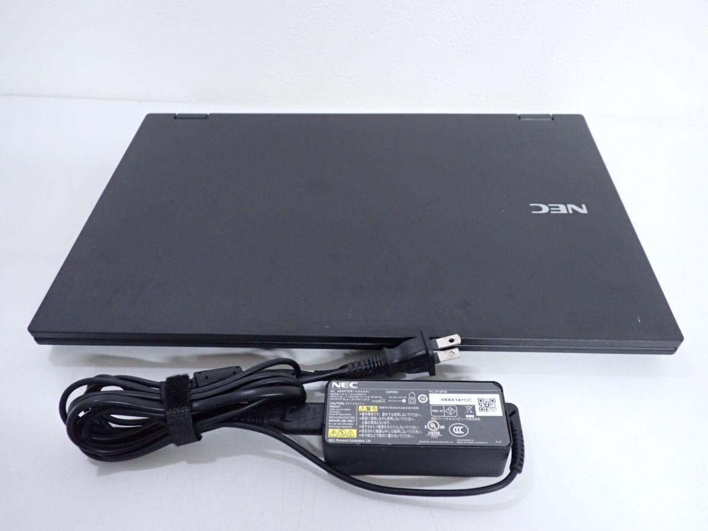

Đang tải ảnh sản phẩm...
NEC VersaPro PC-VKM17XZG7
4.300.000₫
Thông số kỹ thuật
- CPU: Core i5-10310U
- RAM: 8GB
- Ổ cứng: SSD 128GB NVMe PCIe
- Màn hình: 15.6 inch (1920x1080)
- Hệ điều hành: Windows 11 Pro bản quyền
- Thời lượng Pin thực tế: ? giờ
- Trọng lượng: ? gram
Mô tả chi tiết sản phẩm
NEC VersaPro PC-VKM17XZG7 là máy tính cấu hình khỏe khoắn, có thân máy chắc chắn, chất lượng cao, giá thành hợp lý

Thiết kế sang trọng
Video giới thiệu sản phẩm
Hiệu năng mạnh mẽ với bộ vi xử lý Intel Core i5 thế hệ 10, RAM 8GB và ổ cứng SSD 128GB giúp máy hoạt động mượt mà với mọi tác vụ từ văn phòng đến đồ họa cơ bản. Thời lượng pin lên đến ? giờ sử dụng liên tục giúp máy có khả năng di dộng cao.